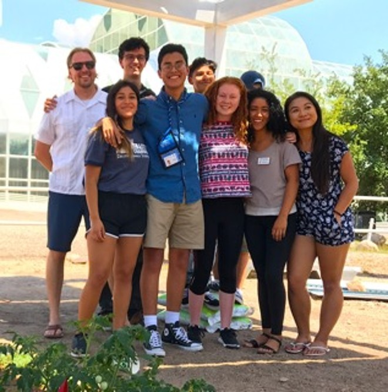
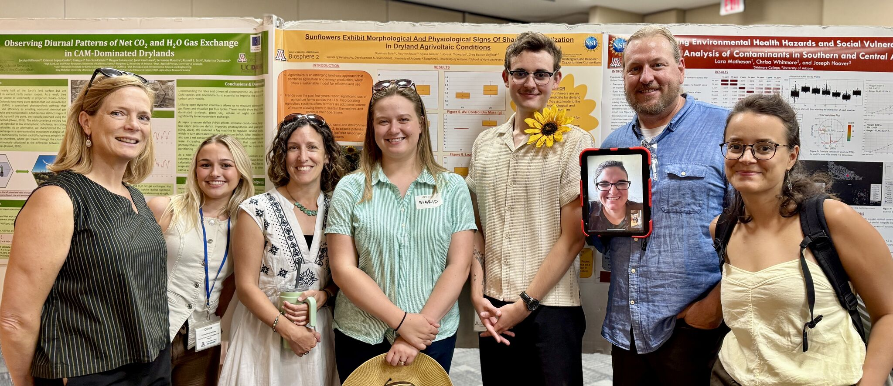

University-Level Engagement
At the university level, SALSA provides rich research and training opportunities for students from a wide range of disciplines, including Geography, Environmental Science, Engineering, and Public Policy. Our team involves students in cutting-edge research, such as mapping agrivoltaic suitability with GIS or conducting surveys of farmer attitudes.[1] This hands-on, interdisciplinary training produces graduates who are uniquely equipped to tackle sustainability challenges.

Summer Research & Mentorship
With support from partners like the National Science Foundation (NSF), SALSA offers immersive summer research experiences for undergraduate students. These programs allow students to conduct meaningful, hands-on research at our key sites, including the Biosphere 2 Agrivoltaics Learning Lab and our large-scale PV demonstration facility.
Student-led projects have explored diverse topics, from testing the viability of sunflowers in low-light agrivoltaic environments to documenting how solar installations can reduce dust from fallow agricultural fields. This vital work, paired with dedicated mentorship from team members and partners like Holly Andrews (LSU), Nesrine Rouini, and Ingrid Holstrom, provides life-changing experiences that prepare the next generation of agrivoltaics innovators.